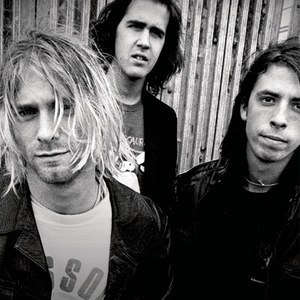
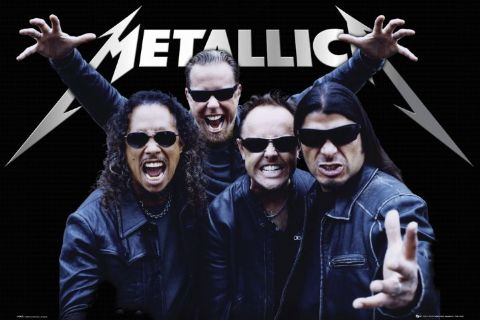

 Nirvana fue una banda de grunge estadounidense procedente de Aberdeen, Washington, Estados Unidos integrada por el vocalista y guitarrista Kurt Cobain y el bajista Krist Novoselic en 1987. Desde su formación, Nirvana pasó a través de una serie de frecuentes cambios de baterista hasta que en 1990 se les unió definitivamente el baterista Dave Grohl. Nirvana actualmente es considerada como una de las bandas más importantes e influyentes de la era moderna. A finales de la década de los años 80 Nirvana se estableció como parte de la escena musical de Seattle con su álbum debut Bleach, lanzado bajo el sello independiente de Seattle, Sub Pop, en 1989. La banda finalmente llegó a desarrollar un sonido que se basaba en los contrastes dinámicos, a menudo versos tranquilos y coros intensos. Un año más tarde, la banda firmó con la discográfica DGC Records y en 1991 lanzó su segundo álbum: Nevermind. El primer sencillo del álbum Smells Like Teen Spirit, escaló las listas musicales en todo el mundo e inició la explosión de lo que hasta ese momento era conocido como punk y rock alternativo en la escena musical mundial, en un movimiento al que los medios de la época se referirían como grunge. Además de Nirvana, otras bandas de la escena musical de Seattle como Pearl Jam, Alice in Chains y Soundgarden también ganaron popularidad; como resultado, el rock alternativo se convirtió en el género dominante en la radio y la televisión musical durante la primera mitad de la década de los 90. El líder de la banda, Kurt Cobain se encontró a sí mismo referido en los medios de comunicación como «la voz de una generación» y a Nirvana como la «banda símbolo» de la Generación X. Cobain se sentía incómodo con la atención que se les brindaba y decidió enfocar la atención del público hacia la música de la banda, retando a la audiencia con su tercer álbum de estudio, In Utero. El álbum no tuvo el éxito ni las ventas esperadas y la popularidad de Nirvana disminuyó en los meses siguientes a la publicación del álbum. Sin embargo, buena parte de su audiencia alabó el interior «oscuro» de la banda, en especial después de su presentación en MTV Unplugged.
 Metallica es una banda de thrash metal estadounidense originaria de Los Ángeles, pero con base en San Francisco desde febrero de 1983. Fue fundada en 1981 en Los Ángeles por Lars Ulrich y James Hetfield, a los que se les unirían Dave Mustaine y Ron McGovney. Estos dos músicos fueron después sustituidos por el guitarrista Kirk Hammett y el bajista Cliff Burton, Dave Mustaine fue despedido un año después de ingresar en la banda debido a su excesiva adicción al alcohol y su actitud violenta, y fundó la banda Megadeth, siendo sustituido por Kirk Hammett ex guitarrista de Exodus. Ron renuncia a la banda debido al mal comportamiento de Dave Mustaine, era violento y problemático cuando estaba bajo el efecto del alcohol. El colmo fue cuando Mustaine mojó el bajo de McGovney con cerveza, él sin saberlo lo conectó, recibiendo una descarga eléctrica. Es entonces, tras contactar con Cliff Burton que la banda se traslada a San Francisco. (Cabe resaltar que Ron sabia que lo iban a despedir y sustituir por Cliff Burton). Por otra parte, el 27 de septiembre de 1986, la muerte de Cliff Burton en un accidente de autobús en Suecia, durante una de sus giras, provocó la entrada al grupo de Jason Newsted,1 quien, tras su abandono quince años más tarde, sería sustituido por el bajista actual, Robert Trujillo.